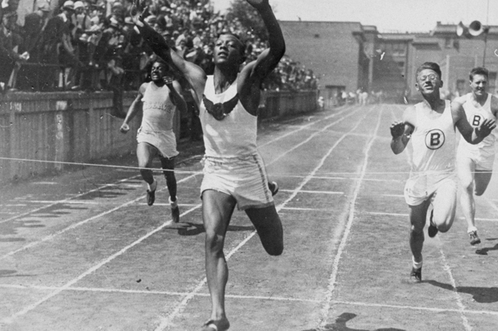

Chi era Jesse Owens?
Jesse Owens, nato il 12 settembre 1913 a Oakville, Alabama, era il più giovane di dieci figli in una famiglia di mezzadri afroamericani. Sin da giovane, mostrò un talento eccezionale per la corsa e il salto in lungo. La sua dedizione e determinazione lo portarono a eccellere nonostante le difficoltà economiche e la discriminazione razziale del tempo.
Le Olimpiadi del 1936
.jpg)
Le Olimpiadi di Berlino furono organizzate dal regime nazista come uno strumento di propaganda per dimostrare la supremazia ariana. Tuttavia, Jesse Owens rubò la scena, vincendo quattro medaglie d'oro nei 100 metri, 200 metri, salto in lungo e staffetta 4x100 metri. La sua performance non solo demolì le ideologie razziste di Hitler, ma catturò anche l'immaginazione di milioni di persone in tutto il mondo.
La gara di salto in lungo fu particolarmente memorabile: Owens ricevette preziosi consigli dal suo avversario tedesco Luz Long, che lo aiutò a qualificarsi per la finale. Nonostante la rivalità in gara, i due atleti strinsero una sincera amicizia che divenne un simbolo di sportività.
L'eredità di Jesse Owens
Dopo le Olimpiadi, Jesse Owens tornò negli Stati Uniti come eroe, ma dovette affrontare le persistenti barriere della segregazione razziale. Nonostante i suoi successi, non gli furono concessi molti dei privilegi riservati agli altri campioni. Tuttavia, continuò a promuovere l'uguaglianza e i valori dello sport.
Owens lavorò come speaker motivazionale e ambasciatore culturale, usando la sua notorietà per ispirare giovani atleti e per abbattere le barriere razziali. Nel 1976, fu insignito della Medaglia Presidenziale della Libertà, il più alto riconoscimento civile negli Stati Uniti, come riconoscimento per il suo contributo alla società.
Curiosità
- Il suo vero nome era James Cleveland Owens, ma il soprannome "Jesse" nacque quando un insegnante fraintese il suo accento meridionale pronunciando "J.C." come "Jesse".
- Nel 1984, lo stadio olimpico di Berlino intitolò una strada in suo onore, dimostrando il rispetto e l'ammirazione guadagnati anche in Germania.
- Il suo record di quattro medaglie d'oro in un'unica Olimpiade resistette per decenni come esempio di straordinaria abilità e resistenza mentale.